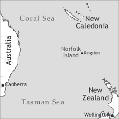

by Peter Mühlhäusler

Norf’k (autoglossonym Norf’k, thus named after the island) is spoken by the descendants of the mutineers of the Bounty (Pitcairn descendants) on Norfolk Island, which is located 1,575 kilometres east of Australia in the South Pacific Ocean. The political status of the island has been a matter of dispute between the Federal Government of Australia, the State of New South Wales and the descendants of the Pitcairn Islanders. The complaints against Australia include the denigration and destruction of the Norf’k language. Pitcairn descendants today comprise fewer than half of the 1,800 permanent residents of the island; significant numbers are also found in mainland Australia and New Zealand.
The official languages of Norfolk Island are English and (since 2004) Norf’k. Norf’k has coexisted with English initially in a situation of stable (Flint 1979) and, since the 1960s, unstable diglossia. The language is not transmitted in full to the children and is no longer spoken in some families. Traditional Norf’k has been replaced by a heavily modified and Anglicized variety or by “instant Norf’k”, i.e. a slightly modified English. Norf’k is an unfocused language with a great deal of (often family-based) variation in lexis, grammar and pronunciation.
Norfolk Island was discovered by Captain Cook in 1779, and, because of its ample natural resources and isolated position, was made a British penal colony in 1788. The first penal settlement was abandoned in 1814, but a second penal settlement was built in 1825 as a location for the extremest punishment short of death. Following much criticism, the settlement was closed down in 1854. This is where the story of a separate Norf’k language (increasingly distinct from Pitkern) begins. Rather than abandon the island, the British Government decided on what was referred to at the time as “the experiment” – to settle a small community of simple god-fearing people on an isolated island and watch their moral progress. To this purpose, the entire population of Pitcairn Island was relocated to Norfolk Island in 1856. Thus, the Norf’k language really originated on Pitcairn Island, as an offshoot of Pitkern (the creole of Pitcairn Island).
The story of the Pitkern language (whose creole status is contested) begins with the mutiny on the Bounty when nine British sailors, twelve Tahitian women and six Tahitian men arrived on Pitcairn Island in 1789. By 1800, following a period of violence, the Englishman John Adams was the sole male survivor with 10 Tahitian women and 23 children. When he died in 1829, the island had become a model Christian community of about 80. As John Adams approached the end of his life he realized that the maintenance of Christian values and the English language required outside help, and in the following years three male British subjects settled on the island and married local women. From the mid 1820s all children were instructed in English literacy by native English speakers. The Tahitian language was not encouraged and within a generation died out on Pitcairn.
Earliest references to an English-Tahitian contact language date to 1789 when the British sailors, to taunt their captain, deliberately mixed Tahitian words into their language. On Pitcairn, the Polynesians communicated with the British mutineers in a pidgin exhibiting a mixture between Tahitian, West Indian (St Kitts) Creole and English. Ross & Moverley (1964) characterize what they called Pitcairnese as the outcome of language mixing and provide numerous details about Tahitian lexicon and grammar, as well as details on dialect features. They provide details on the provenance and likely dialect affiliation of the mutineers (Ross & Moverley 1964: 49, 137). The imperfect knowledge of Tahitian among the first generation children born on Pitcairn is suggestive of the low esteem in which Tahitian culture and language were held by the mutineers. Tahitians were excluded from land ownership. In spite of very unfavourable demographic conditions (by 1800 there were 10 Tahitian women, 23 mixed-race children and one Englishman) English remained the dominant language. The principal linguistic socializers were British males, in particular:
(i) Edward Young, the storyteller, who contributed a number of St Kitts pronunciations and lexemes, [l] for [r] in words such as stole, ‘story’ or klai ‘cry’; and morga ‘thin’< an English dialect word, cf. German mager).
(ii) John Adams, the patriarch, who created the social conditions in which standard acrolectal English, against all demographic odds, could prevail as the dominant language of the community.
As outsiders (referred to as “English, interlopers, mainlanders, horses and loopies”) began to visit the island after 1808, westernization accelerated and Tahitian ways of clothing, food preparation and food collection declined. Distrust of outsiders is an ongoing motif in the history of the Bounty mutineers and their descendants. Both the variety spoken on Pitcairn Island, Pitkern, and Norf’k remain esoteric insider languages, which outsiders are not encouraged to speak or study. I am aware that I was fed a considerable amount of misinformation initially, but after 17 field visits I have become accepted and have made many friends, which permitted me to obtain information not usually given to outsiders.
In 1839 the population of Pitcairn Island had grown to 100, and by 1850 it had reached 156. In 1853, as fish became scarce and the island degraded, the inhabitants solicited the aid of the British Government to transfer them to another island. The relocation to Norfolk was only a partial success, and a number of families returned to Pitcairn shortly afterwards to be joined there by various newcomers over the years. Whilst contacts between the Pitcairn and Norfolk communities continue, the two varieties have developed in virtual separation and are regarded as different languages by many speakers.
The Norf’k language was officially recognized by UNESCO as an endangered language in 2008, having qualified with the nine criteria for language endangerment used by UNESCO. It is estimated that only 2% (predominantly older speakers) are competent in traditional Norf’k, with the majority of younger islanders speaking heavily modified varieties. As the language is taught in the island’s school, second language learners are on the increase.
Changes in use and competence have occurred several times in the history of the language. Norf’k to date has remained an unfocused language in the sense that there are relatively few agreed social norms, either with regard to its use or to its lexicon and grammar. Different families have adopted very different family language policies. In some families English only has been spoken from the 1820s; in many mixed families in more recent times children have grown up as English monolinguals; whereas in others, both English and Norf’k are spoken. Because of the small size of the community, individuals can have a significant influence on the language. Inventors of new words or ways of speaking are often known by name in their inventions (dar thing fe + name of the person). Examples are:
Another example is the expression theegues and thogues, which was the way a toothless old lady pronounces ‘thieves and rogues’. The use of the inventions of individuals can be restricted to their own family. Such differences are used deliberately as markers of separate identity.
Until very recently Norf’k was an oral language and the development of competing proposals for a writing system in the late 1980s has done little to change this situation. The community is divided about the spelling issue and until such time that an agreed spelling system is adopted, written documents in Norf’k continue to be a source of social conflict. As an outside linguist I am not in a position to privilege a particular spelling system or standard of grammar and lexicon. This is reflected in the examples in this chapter.
The status of Norf’k has changed from the Low language in a diglossic situation to a High language. Knowledge and use of Norf’k enjoys considerable prestige, and public support for a revival programme is substantial. A language exhibition at the museum during the sesquicentenary of the arrival of the Pitcairners attracted greater crowds than any other display and June 2008 to 2009 was declared “Year of the Norf’k Language”.
Norf’k, as already mentioned, is an unfocused language and there is a great deal of variation among individuals and families with no clear norms. Norf’k does not have a simple phonology. Flint (n.d.) distinguished seven vowel phonemes, 12 or more diphthongs, three triphthongs and 27 consonants – all in all more than the sometimes mentioned figure of 40 phonemes for English, and far more than 25 for Tahitian. A comprehensive phonological analysis of the language remains to be done. The notion of major allophone may make some sense for Norf’k consonants, but is difficult to apply to some vowels or diphthongs, as Ingram & Mühlhäusler (2002) have demonstrated. There is no clear phonemic status for vowel length for most speakers, for instance, and the number of vowel phonemes would appear to range from five to more than a dozen.
Whilst it is easy to establish an inventory of speech sounds (as was done in the unpublished notes taken by the linguist Flint in the early 1960s), it is very difficult to arrive at a satisfactory phoneme inventory. In fact, no one has produced one to date, probably for good reasons.
What I have done in the following is to use a standard minimal pair test, keeping in mind that it is not a mechanical discovery procedure and that phonemic solutions thus arrived at are non-unique and inherently non-comparable.
Consonantal distinctions that could be established include:
Minimal pairs:
mais ‘mouse, mine’ nais ‘nice’ /m/ /n/
bat ‘but’ put ‘to put’ /p/ /b/
daun ‘down Taun ‘Kingston’ /d/ /t/
kat ‘cut’ gat ‘exist, got’ /k/ /g/
fain ‘find’ pain ‘pine tree’ /f/ /p/
loks ‘lock’ rok ‘rock’ /l/ /r/
shi ‘she’ si ‘see’ /ʃ/ /s/
faadha ‘father’ faaya ‘further’ /dh/ /j/
Near-minimal pair:
jes ‘just chies ‘chase’ /dʒ/ /tʃ/
Other contrasts:
hulu ‘scratch around’ pulu ‘husk of coconut’ /h/
thaenk ‘thank’ taenk ‘tank’ /th/
wanda ‘wonder’ randa ‘porch’ /w/
aʔu ‘spawn’, au ‘type of shell fish’ /ʔ/
|
Table 1. Consonants of Norf’k |
|
bilabial |
labio-dental |
dental |
alveolar |
palato-alveolar |
velar |
glottal |
||
|
stop |
voiceless |
p |
t |
k |
ʔ |
|||
|
voiced |
b |
d |
g |
|||||
|
aspirated |
th |
|||||||
|
voiced aspirated |
dh |
|||||||
|
affricate |
voiceless |
tʃ |
||||||
|
voiced |
dʒ |
|||||||
|
fricative |
voiceless |
f |
θ |
s |
ʃ |
h |
||
|
voiced |
ð |
|||||||
|
nasal |
m |
n |
ŋ |
|||||
|
lateral approximant |
l |
|||||||
|
glide |
w |
j |
||||||
|
flap |
r |
A number of observers have mentioned the complex phonotactics of the language. Ross & Moverley (1964: 143) remark that “there is no aversion to, rather an abundance of consonant groups” in all parts of the Pitkern/Norf’k word. Some examples of consonant clusters are given in Table 2.
|
Table 2. Consonant clusters in Norf’k |
|
|
initial |
final |
|
black ‘black’ |
apkuks ‘non-committal’ |
|
breken ‘broken’ |
behnk ‘bank’ |
|
t∫erimoya ‘custard apple’ |
brit∫ ‘jump up’ |
|
drain ‘water course’ |
faens ‘paddock’ |
|
stig ‘pierce’ |
smedj ‘masturbate’ |
|
spail ‘spoil’ |
shaenks ‘thank you’ |
|
slush ‘wash hurriedly’ |
ritch ‘reach’ |
|
skrep ‘scrape’ |
johlops ‘insert a laxative into a fruit’ |
Most nouns are invariable. Natural gender is usually distinguished by different lexemes, as in madha ‘mother’, fadha ‘father’ or gehl ‘woman’, mien ‘man’.
Number is optional. It is variably expressed by preposed third person plural dem, as in dem lekl salan ‘the small people = children’, an English plural affix -s, as in iyalla skreppas ‘overbearing youngsters’ or by combining both devices, as in dem gehls ‘(the) women’. The latter construction exemplifies a common phenomenon of Norf’k: Its grammar is “cumulative” rather than a common denominator or a levelled koine. Solutions originating in English dialects, St Kitts Creole and Tahitian are used side by side (see also possessive pronouns).
This peculiarity of Norf’k is also encountered with articles. There are numerous forms and there is a great deal of uncertainty as to whether they signal definiteness or specificity. More research is required here.
Generic noun phrases are expressed by zero-marked nouns or a, ar as in:
The pronominal demonstratives are ieh/dieh ‘this’ and daa/dar ‘that’. Dieh and daa are the corresponding adnominal demonstratives.
Adnominal possessives either precede the noun, as in English, or appear after the noun introduced by the preposition fer as in St Kitts Creole. Both possessive and predicate forms can appear in this position. Compare:
(4) dems house
house fer dem
house fer dems
ar house fer dems
‘their house’
Note that the fer possessive usually requires an article. It is not clear what determines the choice of construction or which article is required. This can be seen from the following place names:
Table 3 gives the paradigm of possessive pronouns. Note that neuter gender is only encountered with personal pronouns.
|
Table 3. Attributive and predicative possessive pronouns |
||
|
attributive (prenominal) |
predicative (or postnominal) |
|
|
1sg |
mais |
main |
|
2sg |
yus |
yoen |
|
3sg.m |
his |
his |
|
3sg.f |
her |
hers |
|
du.incl |
himiis |
himiis |
|
du.excl.m |
auwas |
milenhis |
|
du.excl.f |
auwas |
miienhers |
|
2du |
yutuus |
yutuus |
|
3du |
demtuus |
demtuus |
|
1pl |
auwas |
auwas |
|
2pl |
yorlyis |
yorlyis |
|
3pl |
dems |
dems |
The numerals used in contemporary Norf’k are those of English and there is no evidence that this was different in earlier stages of the language.
Attributive adjectives precede the noun, but note that many adjectives can also be used as intransitive verbs. When used predicatively, adjectives usually add the suffix + (link consonant) + an, as in
The comparison of adjectives is by means of affixation only, with (link consonant) + a expressing comparative as in
(7) oel oel-a ‘old-older’
(8) morga morgar-a ‘thin-thinner’
(9) pilli pilli-a ‘sticky-stickier’
Superlatives are formed by means of the affix -es as in oeles, morgares, pillies. A small number of comparatives and superlatives, e.g. beta, baes ‘better, best’ are lexicalized.
The pronouns of Norf’k are variable and complex. One needs to distinguish between a relatively simple set of anaphoric and a more complex set of deictic pronouns. The latter are used for social deixis, in particular to include and exclude interlocutors or persons present at a speech act from the community of true Pitcairn descendants. Table 4 shows the anaphoric pronouns.
|
Table 4. Anaphoric pronouns |
|||
|
person |
subject |
object |
object reduced |
|
1sg |
ai |
mi |
et |
|
2sg |
yu |
yu |
|
|
3sg |
hi/shi |
him/her |
|
|
1pl |
wi |
us |
|
|
2pl |
(ol) yorlye |
(ol) yorlye (you people – typically addressees of Pitcairn origin) |
|
|
3pl |
(ol) dem (only people) |
(ol) dem (only people, rarely used to refer to animals or inanimates) |
|
This neutralization of person, number and gender in object pronouns is common:
This raises an interesting issue. Bresnan (1998: 78) claimed that:
Pronominals are inherently specified for person/number/gender contrast if and only if they are overt. Pronominals are reduced if and only if they are specialized for topic anaphoricity, [and that] it follows that no language has an overt definite personal pronoun devoid of any distinctions of any person, number or gender, while many languages have zero pronouns with this property.
It would seem that Norf’k’s et, an overt personal pronoun devoid of person, number or gender distinction, violates this putative language universal.
To describe the deictic pronouns, Harrison (1986: 100) proposed a pronoun chart that distinguishes the three persons and for each person a subject (1), object (2), possessive (3) and predicate (4) form.
|
Table 5. Principal deictic pronouns of Norf’k |
|||||
|
1st person |
2nd person |
3rd person |
|||
|
masculine |
feminine |
neuter |
|||
|
singular |
|||||
|
form 1 |
ɑɪ |
jʊ |
hɪ |
ʃɪ |
|
|
form 2 |
mi |
jʊ |
hɛm |
hɜ |
ɛt |
|
form 3 |
mɑɪs |
jʊs |
hɪs |
hɜ |
də |
|
form 4 |
mɑɪn |
jon |
hɪs |
hɜs |
|
|
dual |
|||||
|
forms 1 & 2 |
mi ən hɛm, mi ən hɜ, hɛmi |
jʊ tu |
dɛm tu |
||
|
form 3 |
ʌʊwəs, hɛmis |
jʊ tus |
dɛm tus |
||
|
form 4 |
mi ən hɛms, mi ən hɜs, hɛmis |
||||
|
plural |
|||||
|
form 1 |
wɪ |
jɔljɛ |
dɛm |
||
|
form 2 |
ʌklʌn |
jɔljɛ |
dɛm |
||
|
form 3 & 4 |
ʌʊwʌs |
jɔljɛs |
dɛms |
||
As I have pointed out in Mühlhäusler (2009), even this table is far from complete and additional forms used for social deixis could be added.
Generic subject reference can be expressed as follows in Norf’k by means of dem ‘third person plural’ as in:
Salan/sullun ‘people’ is used in a similar way:
Deictic pronouns are used paragraph- or sentence-initially to be replaced by either zero or (in object position) the general anaphoric pronoun et.
Norf’k verbs do not require tense, aspect or mood markers, and these are typically omitted when adverbials are present:
Tense can be expressed by means of bin ‘past’ or gwen, gwenna ‘future’ as in:
The most common aspect markers are -en ‘continuous’ and se ‘completive’. Examples are
There are a large number of other TMA markers, which require further study, in particular their combination with other grammatical markers such as negators. The order in which they appear in Norf’k sentences often differs from English, as in:
Negation of verbs is signalled by nor or nort, usually placed before the verb as in:
Naewa is used to negate actions that occurred in the past (and are completed).
The grammar of Norf’k modal verbs remains under-researched. These include ell ‘can’, must, haewa ‘must’ and a range of others.
The use of the copula is obligatory for locative constructions and highly variable for equative and existential constructions. Interference from English is common with younger speakers.
Existential constructions are formed by means of sentence-initial gat (untensed) or haed (past).
The unmarked word order in Norf’k is SVO. Neither the subject nor the direct object is marked for case. The indirect object is signalled either by word order or by means of fe(r):
The construction in ex. (34), where the indefinite determiner and the recipient pronoun are inverted, is also documented for Pitkern and would appear to have developed before 1854.
Norf’k, unlike most English-based creoles, has a passive construction, expressed by using the unmarked verb form or by adding -et to the verb stem. Unlike in English, the agent cannot be expressed by means of a prepositional phrase. Examples are:
Causative voice is signalled by means of mek. The causee appears in the nominative form as in:
Norf’k has an invariable question tag annieh, anna.
Yes-no questions take the standard SVO order and are distinguished from declaratives by their rising intonation.
In content questions the interrogative form appears sentence initially as in:
Note that interrogatives are typically bimorphemic in Norf’k (e.g. wat-taim ‘when’, wha-thing ‘what’).
Focus constructions appear to be restricted to subjects, though this aspect of Norf’k grammar requires further study. The subject nominal is preceded by es(s) in positive and ent in negative sentences:
Lack of embedding and lack of formal introducers of embedded constructions have often been used as an indicator of creoleness. There is no shortage of adverbial clauses in Norf’k, and the majority of introducers of adverbial phrases come from English, as can be seen from the following table:
|
Table 6. Introducers of adverbial clauses in Norf’k |
|
|
time |
aafta ‘after’, wail ‘while’, wen ‘when’, wenaewa ‘whenever’, biifor ‘before’, tal ‘until’, suuunes ‘as soon as’, lornges ‘as long as’, faastaim ‘when first’ |
|
cause and effect |
ko(s) ‘because’, sait /said ‘because’, miek ‘because’ |
|
opposition |
orlthoe ‘although’, domain ‘although’ |
|
conditional |
(s)ef ‘if’, wedha ‘whether’, swaeda ‘whether’, spoesen ‘if, suppose’, watef ‘what if’, anles ‘unless’ |
|
manner |
semes(wieh) ‘like’, sef ‘like if’ |
|
place |
said ‘where’ |
|
purpose and result |
soe ‘so that’, bembeya ‘lest’ |
Said ‘where’ was reinterpreted subsequently as a causal conjunction ‘because’.
In the case of miek, the reanalysis involved a change of grammatical category rather than a semantic shift as is illustrated by:
The difference between miek and said is illustrated in the following sentence:
Ross & Moverley (1964: 257) argue that said in the meaning of ‘because’ and ‘where’ “probably originates from English besides, beside respectively”, which still suggests reinterpretation by the speakers of Norf’k.
Relative clauses usually do not take a relativizer, though huu ‘who’ is encountered in acrolectal varieties (cf. 49).
Resumptive pronouns can occur after relative clauses as in:
The influence of Tahitian was reduced by the fact that all Tahitian men on Pitcairn were murdered within a few years of their arrival, and only mixed marriages occurred. Tahitian culture and language was held in contempt until very recently, and compulsory teaching of English was initiated on Pitcairn Island in the 1820s. There are some interesting traces of the pervasive racism of early Pitcairn society, including the fact that no children were given Polynesian names, that many life forms were named after Europeans who discovered them but not after Tahitians who may have known them; and the fact that the majority of lexical items referring to undesirable, unnatural or dangerous situations or objects are typically of Tahitian origin, as well as words with taboo connotations.
|
Table 7. Semantically marked Norf’k words of Tahitian origin |
|
|
words of Tahitian origin |
meaning |
|
ama’ula |
‘awkward, ungainly or clumsy’ |
|
eeyulla |
‘adolescent, immature, not dry behind the ears’ |
|
hawa |
‘excrement, faeces’ |
|
hoowi-hoowi |
‘filthy, extremely dirty’ |
|
howa-howa |
‘to soil one’s pants from a bowel movement’ |
|
iwi |
‘stunted, undersized’ |
|
laha (also lu-hu) |
‘dandruff’ |
|
mutty-mutty |
‘dead, died’ |
|
nanu |
‘jealous’ |
|
ootatow |
‘youth who has reached maturity but is still very small in stature’ |
|
po-o |
‘barren or infertile soil’ |
|
poo-oo |
‘unripe or green fruit’ |
|
tarpou |
‘stains on the hands caused from peeling some fruit or vegetables’ |
|
toohi |
‘to curse, blaspheme or swear’ |
|
tye-tye |
‘tasteless food’ |
|
unna-unna |
‘to lack self-confidence’ |
|
wa-haloo |
‘dilapidated, ramshackle’ |
|
whawhaha |
‘conceited, full of self-importance’ |
A particularly noticeable type of word in Norf’k derives from the names of individuals whose striking characteristics or predispositions have become words of the language (see §3). It appears that many of them started as taunts between different families and, as many speakers remember who is referred to, they are dangerous words to use. They include:
(51) saia ‘to invite oneself’ (from ‘Josiah’)
snell ‘to cater insufficiently’ (from a family named Snell)
luusi ‘to whimper or cry in public’ (like a woman named Lucy)
toebi ‘to help oneself to other people’s vegetables’ (like Toby)
breman ‘very thin’ (from a visitor Mr Bremen)
aata ‘to be proud of, to look at with admiration’ (from a man called Arthur)
buswagas ‘big and even uglier than Wagas (nick name)’
Norf’k uses both a relative and an absolute spatial orientation system. The latter is used when referring to locations on the island or fishing spots in nearby waters. The Norf’k system is somewhat different from that of Pitcairn, presumably because of the different topology of the island. Four principal location markers obligatorily appear before Norf’k place names: out, ap, doun, and roun. The principal reference point is the coastal capital Kingston, which is referred to as doun or toun. Reference to coastal locations at any distance from Kingston is signalled by means of out, e.g. out ar windmill ‘a windmill close to Kingston’, out ar Mission ‘the old Melanesian Mission’, out ar station ‘the Pacific cable station’. Ap refers to locations in the hilly interior such as ap ar school ‘the school’ and ap in ar stick ‘the forests near Mt Bates’. Roun appears to be of recent origin. It dates back to the days when the construction of the air field necessitated the rerouting of a number of roads, resulting in roun ar airport ‘(at) the airport’ and roun(d) country ‘the agricultural area in the vicinity of the airport’.